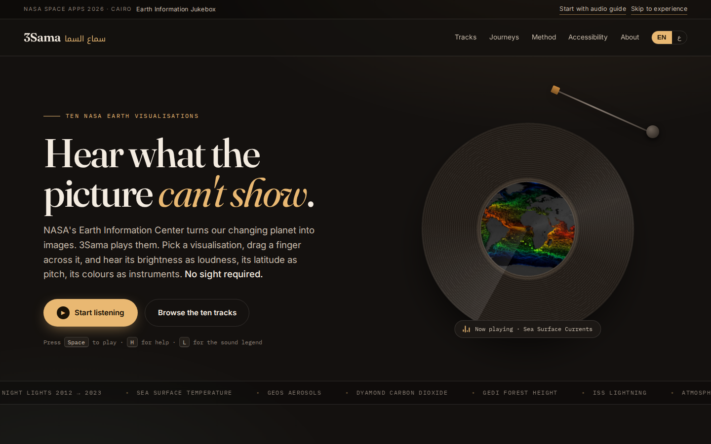
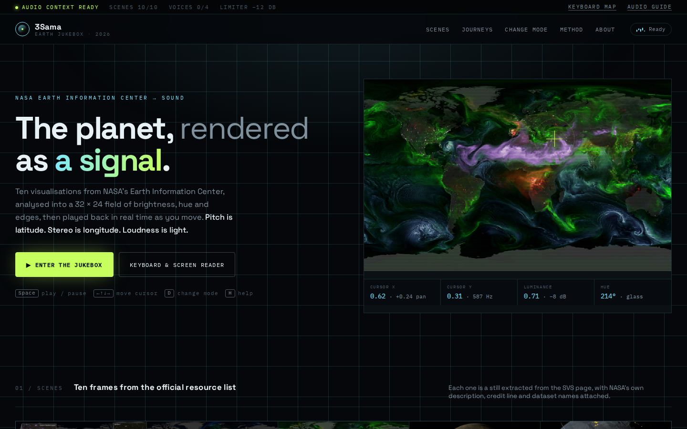
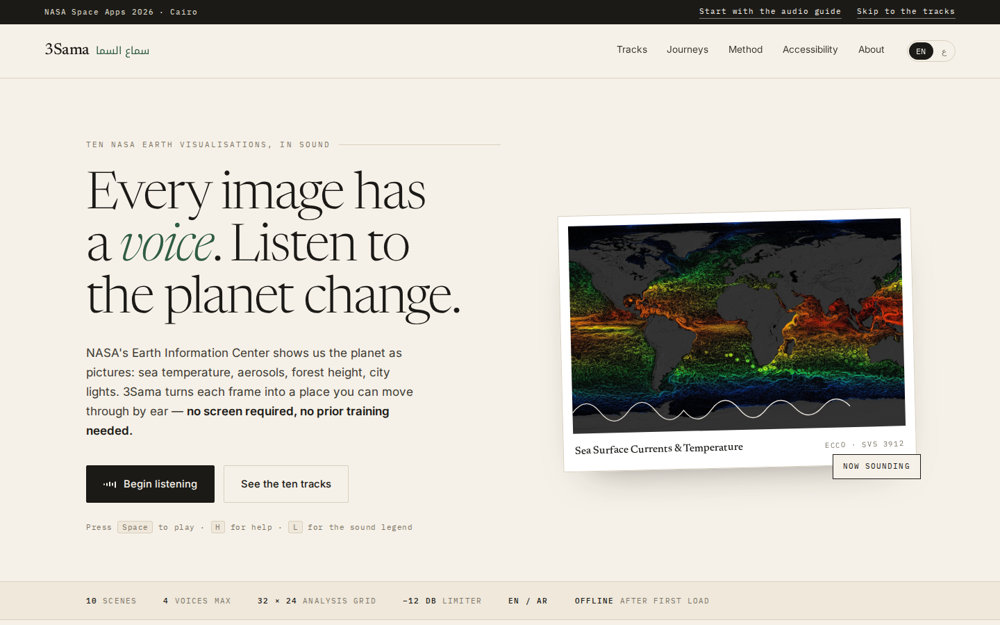

Same content, same real NASA stills, three different arguments about what an Earth Jukebox should feel like. Click one to open it full size; every page is responsive, keyboard-navigable and respects reduced motion.

Warm, tactile, record-store. A spinning disc, a track list, a tonearm. Takes the challenge's own metaphor literally and makes it feel like an object you own.

Instrument panel. Telemetry, live cursor readouts, a grid. Argues that this is science, and that the sound is a measurement — strongest with a technical jury.

Editorial, light, calm. Paper, serif, generous space. Argues that this is for everyone — museums, classrooms, someone on a phone in a quiet room.